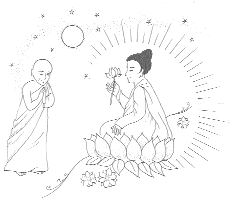

| Série spéciale sur les patriarches Zen |
Hsintien, Formose Le 5 juillet 1987 (Initialement en chinois) |
Mahakasyapa était le premier patriarche Zen. S'il n'avait pas compilé et arrangé les écritures, nous n'aurions pas aujourd'hui le Bouddhisme. Peu de temps après que le Bouddha Shakyamuni soit parvenu au nirvana, Mahakasyapa a rassemblé les disciples de haut niveau du Bouddha - les grands saints - afin de compiler les écritures pour leurs pratiquants et les futures générations. Mahakasyapa et Ananda nous ont apporté d'immenses bienfaits, nous leur en sommes très reconnaissants. Aussi, je pense qu'il est approprié de parler des patriarches Zen.
Mahakasyapa et le Bouddha Shakyamuni ont commencé à s'engager dans la pratique spirituelle à peu près en même temps. Mahakasyapa était de descendance Brahmane. Les Indiens étaient divisés en quatre classes : d'un côté, au sommet, les Brahmanes, les familles royales ou les saints, et de l'autre, les esclaves ou les travailleurs qui n'étaient pas éduqués et qui n'avaient aucun statut social. Etant les plus respectés de la société, les Brahmanes formaient à l'époque, la classe supérieure et dirigeante de l'Inde. Mahakasyapa était né dans le pays de Magadha. Son père, était Yingzhe, et sa mère, Hsiangzhi. Tout jeune, il était beau et très digne. Son corps irradiait un halo doré qui représentait ses vibrations spirituelles, invisibles aux gens ordinaires. Cette aura dorée brillait longtemps avant qu'il renonce à sa vie de laïque. A la demande de ses parents, un diseur de bonne aventure réputé avait fait la prophétie suivante : "Cet enfant a des mérites exceptionnels. Il semble destiné à être moine." En entendant ces paroles, ses parents ont craint de le perdre au profit d'un ordre monastique. Comme vous le savez, les gens disent souvent : "C'est formidable pour les autres que leur fils devienne moine, mais pas pour le mien !"
Les parents de Mahakasyapa avaient décidé : "Pas question ! Quand il sera grand, nous trouverons une jolie fille et nous le marierons immédiatement. Une fois lié à une femme, il ne pourra penser à devenir un moine ou un grand homme, ou même à la libération." Le plan de ses parents était fixé. Ainsi, quand Mahakasyapa a atteint l'âge de quinze ou seize ans, ils ont voulu qu'il se marie. Mais à chaque fois, il refusait. Ses parents l'ont poussé et menacé, faisant usage de toutes sortes de ruses, et en adoptant une approche déchirante : "Si tu ne te marie pas, je me tuerai..." Mahakasyapa a refusé de nombreuses fois, mais au bout du compte, a fini par céder à leur demande, et leur dit : "Bien, je respecte votre opinion, mais vous devez trouver une fille qui soit de la même couleur que moi. De son corps doit émaner de la lumière, elle doit avoir un corps doré et me ressembler, c'est à cette condition que je me marierai, autrement, je resterai célibataire !"
Avez-vous remarqué que certains couples se ressemblent beaucoup ? Le nom Mahakasyapa signifie "absorber tout autre lumière". Cela veut dire que Mahakasyapa dégageait une lumière dorée et brillante si intense que toutes les autres lumières étaient pâles en comparaison et semblaient avoir disparu. Donc, Mahakasyapa signifie "Grande lumière". Une fois que les parents de Mahakasyapa ont appris qu'il voulait trouver une fille qui lui ressemble, ils ont fait faire une sculpture à son effigie, sculptée dans de l'or. Parce que, non seulement des rayons dorés émanaient de sa personne, mais son corps physique était comme de l'or. On a recherché dans tout le pays une fille ressemblant à la sculpture. Finalement, on en a trouvé une, et Mahakasyapa a dû honorer sa promesse et l'épouser. Cette histoire explique pourquoi Mahakasyapa a épousé cette fille.
A présent, laissez-moi vous raconter cette partie. Pourquoi y avait-il une fille d'une si noble apparence ? Très très longtemps avant l'époque du Bouddha Shakyamuni, il y eut sept saints illuminés. L'un d'entre eux s'appelait Vipasyin. Lorsque Vipasyin entra au nirvana, ses fidèles édifièrent un temple, où ses reliques étaient adorées, une statue à son image y fut également modelée. Plusieurs années plus tard, la statue s'abîma et la couche d'or du visage se craquela. Une pauvre femme s'étant rendue au temple pour adorer le saint remarqua que la statue avait besoin de quelques réparations. Elle prit son unique lingot d'or et l'emmena à Mahakasyapa, alors orfèvre, et lui demanda de le fondre en vue de réparer le visage. Touché par cette femme pauvre mais sincère, Mahakasyapa fut très content de l'aider. Ils devinrent de bons amis. Plus tard, cet objectif commun, qui était de restaurer la statue du saint, les unit dans le mariage, leur lien étant fondé sur un sentiment partagé, une compréhension mutuelle, et du respect, plutôt que sur le désir sexuel. Ils firent le voeu de devenir mari et femme dans les vies à venir.
Par conséquent, dans sa dernière vie, Mahakasyapa dut l'épouser même s'il voulut rejoindre l'ordre monastique. Jusqu'à l'époque du Bouddha Shakyamuni, ils avaient connu quatre-vingt-onze renaissances, à chaque fois dotées de corps dorées et partageant avec bonheur leur vie ensemble, à cause de leur voeu, du mérite d'avoir réparé la statue du saint, et d'avoir offert cet or au saint. A la fin de chacune de leur vie, ils allaient au paradis de Brahma, le Dieu de la création, où ils étaient heureux avant de redescendre sur la terre pour être à nouveau des êtres humains. Dans cette dernière vie, ils sont tous deux nés dans des familles riches, encore une fois à cause de leurs mérites. Et ce sont leurs parents, leurs relations karmiques et leur voeu sincère qui les ont unis dans le mariage.
Quelquefois, lorsque nous voyons des gens se marier, nous ne pouvons supposer que ce n'est pas bien et que c'est seulement basé sur un désir sexuel. Ils ont pu faire un voeu qui les unit à présent ensemble. Par conséquent, nous ne pouvons pas dire que tous les mariages ne sont pas bons. Après que Mahakasyapa ait épousé cette fille, ils ont vécu comme des amis intimes, mais ont dormi séparément, se traitant l'un l'autre comme des pratiquants et n'ayant aucune relation sexuelle. Longtemps après leur mariage, ils ont tous les deux demandés permission à leurs parents de devenir moines, suppliant que la demande soit exaucée, sur quoi ils ont rejoint l'ordre monastique et se sont rendus à des endroits différents afin de poursuivre leur pratique spirituelle.
Après avoir pratiqué l'ascétisme dans les montagnes pendant quelque temps, Mahakasyapa a entendu une voix dans le ciel : "A présent, un Bouddha est descendu dans le monde pour enseigner le peuple. Tu dois aller Le chercher et Le suivre." Mahakasyapa s'est rendu dans la forêt de Bambou du Bouddha Shakyamuni, et avec la plus grande sincérité, a demandé au Bouddha qu'Il l'accepte comme disciple. Le Bouddha Shakyamuni a dit : "Tu es un moine avec de bons mérites. Va, je te prie te raser la tête et la barbe. Mahakasyapa a été ainsi initié au statut de moine et a suivi le Bouddha. Il a progressé très rapidement, comprenant facilement les profonds enseignements du Bouddha et devenant même Son disciple favori. Il a pratiqué avec assiduité et a rapidement atteint l'état d'Arhat.
Un jour, Mahakasyapa est revenu de très loin, voir le Bouddha Shakyamuni. Bien qu'étant né dans une famille riche, il avait pratiqué l'ascétisme et s'était peu soucié de son apparence extérieure. Il était arrivé en loques, amaigri, terrible, et sans aucune dignité, très probablement à cause de sa pratique de l'ascétisme, de manque de sommeil et de nourriture. Son aspect physique n'était pas délibéré. Au moment de son arrivée, d'autres moines et disciples s'étaient rassemblés autour du Bouddha, L'écoutant parler. Ils ont regardé Mahakasyapa avec dédain à cause de son apparence. Les disciples qui étaient habituellement aux côtés du Bouddha, grâce à une nourriture et des vêtements en quantité suffisante, étaient en bonne santé et avaient une belle apparence physique. Tandis que Mahakasyapa n'avait pas un sou et pratiquait l'ascétisme, reclus dans la montagne. Ainsi, les moines et les nonnes l'ont regardé avec mépris.
Le Bouddha Shakyamuni a remarqué leur réaction et a dit : "Mahakasyapa viens ici. Je vais partager ma place avec toi". Mahakasyapa n'a pas osé accepter et s'est assis sur le sol. "J'ai beaucoup de chance, le samadhi (joie qui découle de la méditation) et un mérite infini qui me rendent plus digne" a dit le Bouddha Shakyamuni a Ses disciples, signifiant par cela que l'on doit être digne par les mérites plutôt que par les vêtements. Certaines personnes paraissent ordinaires, mais nous les respectons quand même lorsque nous les rencontrons. Ici, le Bouddha Shakyamuni est cité, disant qu'Il a des mérites infinis à Se rendre digne, il en est de même pour Mahakasyapa. Il a loué Mahakasyapa pour ses mérites et sa sagesse, tout comme pour son haut degré de pratique spirituelle qui le plaçait sur un plan d'égalité avec des saints totalement illuminés. Ainsi le Bouddha, a-t-Il voulu lui offrir la moitié de Son siège, c'est-à-dire que Mahakasyapa n'a fait qu'un avec Lui. Ces paroles ont choqué les moines, qui ont finalement compris et qui sont immédiatement devenus respectueux envers Mahakasyapa.
 Un jour, durant une conférence sur le Mont Grdhrakuta, le Bouddha Shakyamuni a montré une fleur de lotus qu'Il avait dans les mains. Le public n'a pas compris Son geste. Comprenant cette révélation, seul Mahakasyapa a souri. C'est ce même dicton chinois qui parle de "Mahakasyapa souriant au Bouddha qui tend une fleur". Le Bouddha Shakyamuni a dit : "Je possède la véritable méthode pour l'ouverture complète de l'œil de sagesse et pour atteindre le nirvana. Cela ne s'exprime pas par des mots, et se transmet au-delà de l'enseignement verbal. Aujourd'hui, je te le transmets, Mahakasyapa. Tu dois protéger cette méthode soigneusement et t'assurer qu'elle soit transmise pour toujours sans être perdue. Plus tard, tu pourras la transmettre à Ananda." Le Bouddha a demandé à Mahakasyapa qu'il vienne Le voir et Lui a offert la moitié de Son siège. Il a mis Sa robe - la "Sanghati" (la robe rapiécée) - autour de Mahakasyapa avec un geste signifiant la transmission du statut de Maître, et que ce disciple n'était pas différent du Bouddha, étant assis sur la moitié de Son siège, et portant la robe la plus noble. Cette robe a ensuite été donnée au sixième patriarche Zen Hui Neng.
Là, le Bouddha Shakyamuni a récité un poème : "Cette méthode n'est pas une méthode ; elle n'a pas de forme. Pourtant, même une méthode sans forme est une méthode. Aujourd'hui, je transmets cette méthode sans forme ; mais aucune méthode n'est une méthode". Pour Mahakasyapa, hériter de l'état de Maître du Bouddha Shakyamuni, lui a conféré plus tard le titre de premier patriarche du Bouddhisme. Le Bouddha Shakyamuni était reconnu comme le Maître et Le Grand Guide, alors que le premier patriarche, Son successeur, est appelé le premier patriarche.
Quand Mahakasyapa a reçu la nouvelle lui apprenant que le Bouddha entrait au nirvana, lui-même et cinq cent disciples se précipitèrent à Kusinayara pour Le voir, mais arrivèrent trop tard. Mahakasyapa, triste, a marché autour du cercueil doré du Bouddha trois fois. Le Bouddha, bien que parti, a été touché par l'acte du disciple, et a tendu Ses pieds, pour que Mahakasyapa puisse Le voir. Mahakasyapa a été si ému, qu'il s'est prosterné aux pieds du Bouddha. C'est l'histoire derrière le dicton "Se prosterner aux pieds du Bouddha". Quand Mahakasyapa, ému, s'est prosterné aux pieds du Bouddha, il en a reçu une grande consolation. Parce qu'il était arrivé trop tard pour voir son Maître, le Bouddha, qui l'aimait tendrement, l'a laissé voir Ses pieds pour la dernière fois. Après la crémation du Bouddha, Mahakasyapa dit aux moines : "Nous allons demander aux êtres célestes et aux gardes de protéger les reliques du Bouddha. Cependant, nous autres moines, seront responsables de la compilation des écritures pour les futures générations. Les disciples du Bouddha n'entreront pas encore au nirvana. Ceux, parmi vous, qui ont des pouvoirs magiques, se rassembleront pour compiler les écritures." Sept jours après que le Bouddha Shakyamuni se soit rendu au nirvana, Mahakasyapa a rassemblé cinq cent arhats afin de se charger du travail de compilation dans une caverne du mont Grdhrakuta.
Cependant, il y avait un homme qui ne pouvait y participer. Savez-vous de qui il s'agissait ? C'était Ananda. A l'époque, Ananda n'avait pas encore atteint le niveau d'un arhat parfait. Il avait encore des "fuites", des côtés sombres et ténébreux. Il n'avait pas été nettoyé et devait encore parvenir à la pureté maximum. Par conséquent, Mahakasyapa n'a pas permis à ce saint incomplet, qui avait encore les qualités d'une personne du monde, de participer au travail, et l'a même réprimandé : "Tu n'es pas pur ! Ne viens pas ici contaminer l'assemblée des saints." Eh bien ! Si quelqu'un d'ordinaire avait entendu ces mots, comment pensez-vous qu'il aurait réagi ? Il aurait dit : "Comment oses-tu me parler ainsi ?" Une personne ordinaire se serait rebiffée et des problèmes auraient surgi. Il aurait pu engager une bagarre, se disputer, se battre, casser des tasses ou blesser ses jambes. Il aurait même pu résister ou demander de rentrer chez lui.
Cependant, Ananda était un saint. Bien qu'ennuyé, il savait qu'il n'était pas propre et qu'il n'avait pas bien travaillé sur le chemin spirituel ; chaque jour il parlait beaucoup et ne respectait pas les préceptes à la lettre ; au lieu de cela, il se contentait uniquement de l'amour du Bouddha. Il était parent du Bouddha et pensait qu'il était suffisant de se rappeler tout ce qu'avait dit le Bouddha. Le Bouddha Shakyamuni avait prévenu Ananda plusieurs fois et lui avait demandé de pratiquer avec plus d'assiduité. Cependant, il prenait les choses à la légère et ne travaillait pas beaucoup. Ce n'est qu'après que le Bouddha soit parti qu'il a réalisé qu'il n'y aurait personne d'autre qui le gâterait comme Bouddha l'avait fait. Il n'y avait personne sur qui compter, rien à faire. Ananda avait servi le Bouddha chaque jour. Alors il avait des excuses : "Je suis très occupé !" "Je n'ai pas le temps de méditer." "Le Bouddha m'a fait appeler alors même que j'étais sur le point de méditer." "Je me sacrifie pour le Bouddha et pour le peuple".
Après avoir été renvoyé, Ananda était resté éveillé toute la nuit, méditant sincèrement, et est alors entré en samadhi. En une nuit, il est devenu un véritable arhat (sans aucune "fuite"). Il s'est immédiatement rendu dans la caverne pour voir Mahakasyapa qui savait ce qui s'était passé dès qu'il a vu Ananda. Alors, il n'a la pas rejeté, mais au contraire, l'a loué devant les autres moines. "Notre moine Ananda est notre première source d'information. Il a souvent écouté les discours de Bouddha et se souvient de tout ce que le Bouddha a dit, sans oublier aucune chose, tout comme une bouteille qui ne laisserait passer aucune gouttelette d'eau. Nous allons l'inviter afin qu'il puisse compiler les écritures avec nous pour rendre notre travail parfait. Nous allons demander aux nonnes de compiler les préceptes". Les moines ont accepté avec joie. La compilation des écritures a marqué la fin de la mission de Mahakasyapa qui était de délivrer les êtres sensibles. Il a fait appeler Ananda et a dit : "Lorsque le Bouddha était sur le point d'entrer au nirvana, Il m'a demandé de te transmettre la méthode d'ouverture de l'œil de sagesse. Je vais bientôt partir. Alors maintenant, le moment est venu. Tu dois la protéger soigneusement. Fais en sorte qu'elle ne soit pas perdue."
Voilà l'histoire de Mahakasyapa. Sans lui et Ananda, nous n'aurions jamais su qui était le Bouddha Shakyamuni. Nous leur sommes véritablement reconnaissants. En étudiant leur histoire, nous pouvons avoir envie de poursuivre une pratique spirituelle. Et selon l'histoire, Mahakasyapa n'était pas un homme ordinaire. Il était né avec un corps de couleur dorée qui irradiait une lumière de couleur brillante. Il avait également l'aspiration noble de devenir moine. Peut-être avez-vous entendu que des gens disent que j'ai un corps doré. Mon maître l'avait vu avant que je pratique la méthode Guan Yin et que je devienne une nonne. Dans "Le Véritable sens du chant du Bouddha Amitabha" - La Clé de l'illumination immédiate, version chinoise, volume 3 - certaines personnes ont vu mon corps à l'éclat coloré qui irradiait une très forte lumière ; d'autres ont dit que de mon corps émanait une lumière blanche, et d'autres encore ont dit que d'autres types de lumière s'en échappaient. Les gens voient des lumières différentes selon leur niveau spirituel. Mais si je vais avec vous faire des courses, vous pouvez demander à un vendeur au marché, "Savez-vous que mon Maître a de la lumière ?" Il dira alors, "Vous êtes fou ! De quoi parlez-vous ? Je ne vends que des légumes. Pourquoi me posez-vous cette question ? Je ne sais pas ce qu'est la "lumière" !"
Notre histoire dit que Mahakasyapa avait de la lumière, parce que l'écrivain a dû être un disciple de niveau élevé qui a pu voir le corps doré de Mahakasyapa. Pourquoi est-ce que je dis cela ? Parce que le livre dit que la lumière dorée de Mahakasyapa se propageait très loin. Elle aurait été invisible pour quelqu'un qui ne pratiquait pas la spiritualité et qui n'avait pas de grande sagesse. L'écrivain était un disciple de niveau élevé de Mahakasyapa, alors il pouvait percevoir l'apparence de son maître, et l'histoire qu'il a écrite était plus proche de la réalité. Un disciple ordinaire aurait pu seulement écrire en insistant sur le savoir de son maître, son lieu de naissance, son âge, la méthode qu'il enseignait, et s'il était ou non miséricordieux, s'il travaillait dur ou non, son nombre de disciples, son nombre d'heures de sommeil, le nombre de repas qu'il prenait chaque jour et ainsi de suite. Je suis sûre que cette histoire a été écrite pour nous par un grand pratiquant.
Une autre chose, est que les parents de Mahakasyapa n'ont pas du tout été d'accord quand ils ont appris qu'il voulait devenir moine. Nous savons tous que les gens de quelque pays ou de religion que ce soit, considèrent les moines avec beaucoup de révérence. Les gens aiment visiter les églises et les temples afin d'y adorer les maîtres ou les moines éminents et leur faire des offrandes en respect. Ils aiment les moines, mais ils font des histoires lorsque leur propre enfant veut renoncer à la vie laïque. Cela est compréhensible. Les parents ont toujours été les mêmes à toutes les époques. Ils aiment les moines et pensent "Qu'il est bon que le fils de quelqu'un devienne moine, mais pas le mien. Mon enfant doit se marier et avoir un fils pour continuer la lignée familiale ; il doit obtenir un doctorat ou devenir avocat pour gagner beaucoup d'argent ; il doit épouser la plus belle et la mieux éduquée des femmes et devenir père".
En lisant les histoires anciennes, nous apprenons que la vie des moines est celle qui est la plus noble. C'est pour cela que le Bouddha Shakyamuni a abandonné le monde entier et Son royaume. Son fils, Rahula n'avait que neuf ans et était censé hériter du trône, mais le Bouddha Shakyamuni l'a aussi emmené avec Lui, et il est devenu moine. Le Bouddha Shakyamuni a même permis à Sa propre femme de devenir nonne. Cela signifie qu'être un moine est mieux que d'être roi. Si demain nous avons un accident, il nous faudra laisser chaque chose de ce monde derrière nous. Lorsque nous irons en enfer, le roi de l'enfer ne nous demandera pas quel diplôme nous avons obtenu. Lorsque nous irons au Paradis de l'Ouest, le Bouddha Amitabha ne nous demandera pas si nous avons réussi les examens ou échoué. Si nous sommes vertueux, nous pouvons y aller. Si nous ne sommes pas vertueux, nous ne pouvons pas, même si nous avons dix diplômes universitaires. Par conséquent, ce n'est pas que les moines abandonnent les bonnes choses, mais plutôt que les gens de ce monde abandonnent véritablement les bonnes choses - ils abandonnent le nirvana, abandonnent le grand pouvoir et la liberté, et abandonnent également l'éternité pour des petites choses.
Une autre chose que j'ai remarquée dans plusieurs écrits et que le Bouddha Shakyamuni a dite, "Vous êtes à présent un moine avec de grands mérites", et ainsi les cheveux de cette personne tombent automatiquement. Mais cette histoire est la première qui raconte que le Bouddha Shakyamuni a dit :"Va, je te prie, te raser les cheveux et la barbe". Alors cette histoire est peut-être plus précise. Parce que je sais très bien que le Bouddha Shakyamuni n'aurait pas utilisé de pouvoirs magiques. Pourquoi utiliserait-Il des pouvoirs magiques pour que les cheveux d'une personne tombent ? Il n'avait pas besoin de le faire ; c'était une chose triviale qui pouvait être faite avec un rasoir. Il n'a même pas accompli de hauts faits en utilisant les pouvoirs magiques ; pourquoi raserait-Il le crâne des gens en utilisant des pouvoirs magiques ? Ce n'est qu'un jeu d'enfant. Je ne crois pas que le Bouddha Shakyamuni aurait fait cela. Bien sûr, Il aurait pu le faire, mais cela ne Lui ressemblait pas. Pourquoi un Bouddha ferait-Il de telles choses pour attirer les gens vers Lui ? S'Il avait fait de telles choses, je pense que le pays tout entier serait devenu disciple parce que c'était facile. Aussi, je crois que la traduction de cette histoire est plus proche de ce qui s'est passé, tandis que les versions traduites d'autres histoires sont exagérées (ou simplement symboliques).
Lorsque nous respectons une personne, nous avons tendance à exagérer à Son sujet - nous disons qu'elle a fait ceci, lorsqu'en réalité elle a fait autre chose. Par exemple, de nombreuses personnes vont dire que le Maître Kuang Chin a pratiqué la guérison spirituelle. Mais je ne le crois pas. Je ne pense pas qu'il l'ait fait intentionnellement. Son haut niveau spirituel faisait que les gens avec une affinité se sentaient naturellement mieux lorsqu'ils étaient près de lui. Aussi, par exemple, vous avez peut-être entendu que j'ai guéri de nombreuses personnes, mais cela a été invisible. Je n'ai pas récité de mantra pour les guérir. Je n'ai rien fait intentionnellement, mais le pouvoir de ma pratique spirituelle est devenu un médicament et un réconfort ; lorsque les gens ont une affinité avec moi et qu'ils s'approchent de moi, ils se sentent à l'aise et sont immédiatement guéris.
Il y a une grand-mère à Tainan, dont la maison est utilisée pour la méditation de groupe le dimanche. Un jour, elle a été dans l'incapacité de marcher et a dû rester au lit. Mais lorsque je lui ai rendu visite, elle a été guérie immédiatement et a pu se lever et marcher. Elle était très heureuse et a parlé toute la journée. A présent, elle peut marcher et garder la maison. Je n'ai rien fait intentionnellement, mais un pratiquant spirituel a le pouvoir d'aider les autres. Lorsque les gens s'approchent de lui, ils guérissent immédiatement. Je ne vous guérirai pas intentionnellement, avec des pouvoirs magiques, afin de vous attirer à l'initiation. Le Bouddha Shakyamuni ne Le ferait pas non plus. Aussi, cette version traduite dit : "A présent, tu es un moine avec de grands mérites. Okay, je t'en prie, va te raser les cheveux et la barbe". Je suis heureuse d'avoir finalement trouvé un écrit sage et objectif, qui ne soit pas plein de superstition et d'exagération. Le Bouddha Shakyamuni détestait l'utilisation de pouvoirs miraculeux pour attirer les autres. Moi-même, je ne vous permets pas d'utiliser de tels pouvoirs. Je suis une personne ordinaire, pourtant je sais cela ; alors, pourquoi le Bouddha Shakyamuni ferait-Il un usage abusif de Ses pouvoirs magiques en public, pour que les cheveux d'une personne tombent ?
Lorsque le Bouddha Shakyamuni transmit le statut de Maître à Mahakasyapa, Il récita le poème : "Cette méthode n'est pas une méthode ; elle n'a pas de forme. Pourtant, même une méthode sans forme est une méthode. Aujourd'hui, je transmets cette méthode sans forme ; mais aucune méthode n'est une méthode." Je dis la même chose lorsque je donne l'initiation : "Je vous initie avec cette méthode, mais je n'ai pas de méthode à vous enseigner ; non pas que je ne vous enseigne pas la méthode, mais plutôt que vous n'obtiendrez pas de méthode". Pour traduire cela en langage ordinaire, je dirais que lorsque je vous initie, je vous donne une méthode qui n'a pas de forme. Toutes les méthodes proviennent de la "méthode sans forme" et ne sont rien. Les affirmations : "Rien ne se produit dans ce monde" et "Fondamentalement, aucun arbre Bodhi (sagesse) n'existe", signifient toutes deux la même chose.
Seulement après avoir pratiqué la méthode Guan Yin et avoir été capable d'initier les autres, ai-je compris que cette méthode n'avait pas de forme. Lorsque j'ai été initiée et ai pratiqué pour la première fois la méthode Guan Yin, je n'ai pas réalisé cela immédiatement. Cependant, sans un maître pour vous initier, vous ne pouvez pas apprendre cette méthode sans forme. Qui pourrait comprendre ce que je dis ? Seulement vous, ceux qui ne sont pas initiés ne peuvent pas comprendre. Le maître qui enseigne cette méthode la comprend de la façon la plus parfaite qui soit, parce qu'il n'enseigne à personne et qu'il n'a aucune méthode à enseigner. C'est la raison pour laquelle, lorsque le Bouddha Shakyamuni a transmis cette méthode sans forme à Mahakasyapa, Il a dit que ce n'était pas une méthode, parce que toutes les méthodes étaient sans forme et qu'aucune méthode n'était une méthode.